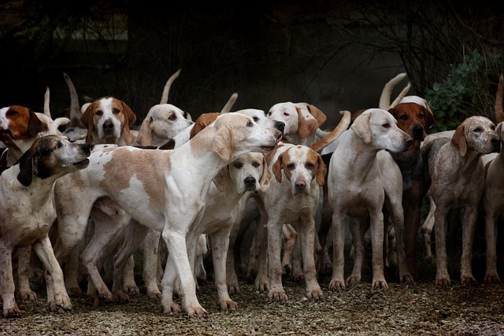
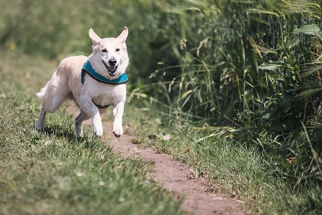

Célunk, hogy segítsünk megtalálni a tökéletes kutyát, akivel szeretetteljes otthont biztosíthatsz. Minden kutya egyedi, és mi segítünk megtalálni a legmegfelelőbb társat, aki szeretetre és gondoskodásra vágyik.
Kik vagyunk?

Mi egy elhivatott csapat vagyunk, akik segítenek kutyáknak szerető otthont találni. Az örökbefogadás nem csupán egy döntés, hanem egy életre szóló kapcsolat kezdete. Munkánkat a kutyák és gazdáik boldogsága iránti elkötelezettség vezérli.
Miért válassz minket?
Tapasztalt csapatunk minden kutyát gondosan kiválaszt és felkészít az örökbefogadásra. Segítünk, hogy a kutyák és az új gazdik közötti kapcsolat gyorsan kialakuljon, és a lehető legjobb élményt biztosítsuk mindkét fél számára.
